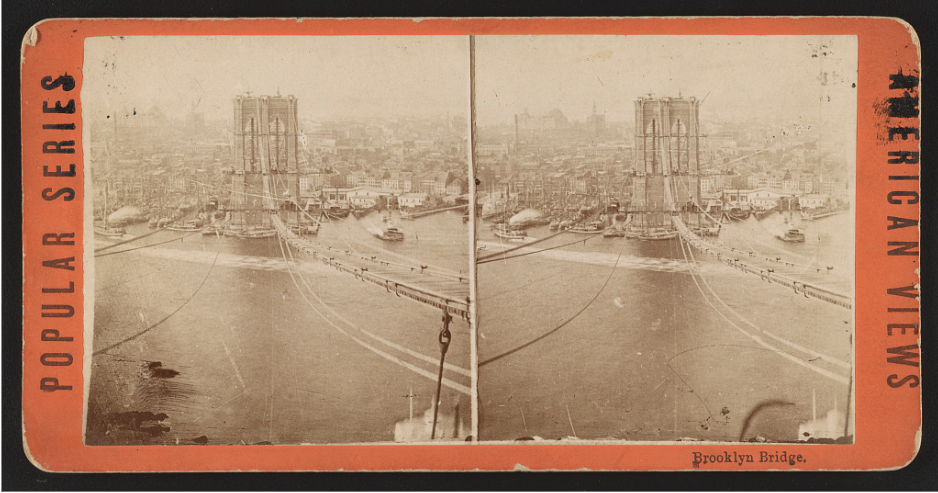

Entry 01
The City and Its Workers
Introduction
Imagine you are inside a wooden box, seventy feet below the surface of New York's East River, with the only thing keeping the water at bay being pressurized air.¹ Many immigrants during America's Gilded Age found themselves in just this predicament, and other situations just as precarious. Despite the ill treatment and generally dangerous working conditions that American immigrants endured during the Gilded Age, American immigrants rapidly increased the rate at which American cities urbanized.

Immigrants from the British Isles
Nothing could epitomize the dangerous working conditions endured by the American immigrant more than the experience of Frank Harris. Frank Harris described one experience working on the Brooklyn Bridge as six laborers packed into a small iron container, with water touching their feet, only kept at bay by the pressure that was being pumped into the chamber.² These workers were called “sandhogs,” and their containers, “caissons.” Many of them were immigrants, like Frank Harris, who hailed from Ireland.³ The Brooklyn Bridge was constructed over 14 years, from 1869 to 1883.⁴ During this time, America was experiencing a great influx of immigrants; from 1870 to 1890, around 63% of all immigrants had the United States as their destination. According to a classical theory of European immigration, you can think of the immigrants during this time frame as the before-1880 and the after-1880 immigrants. This division was constituted by their country of origin, where most of the immigrants before 1880 came from Northern and Eastern Europe, and after 1880, most of the immigrants were Slavic.⁵ Finally, in 1883, the Brooklyn Bridge's construction was complete. Upon its completion, it was named the eighth wonder of the world. Just five short years after the completion of the Brooklyn Bridge, the city of Brooklyn was formally merged with New York.⁴ More than twenty individuals died during the construction of the bridge, William Reardon, an Englishman, and Patrick McKay, an Irishman, among them.⁶ The laborers who were often immigrants from the British Isles gave their very lives to help expand the infrastructure of the United States. Their sacrifices allowed the cities in the United States to further expand.
Chinese Immigrants
In 1848, when gold was discovered in California, Chinese workers were recruited as laborers. Additionally, a large number were recruited to help aid in the construction of the transcontinental railroad.⁷ The overall weak economy and the Chinese immigrants' general willingness to work for lower wages led to building resentment from disgruntled workers. This resentment manifested itself physically, with violent crowds torching Chinatowns on the West Coast. This violence led to the Chinese immigrants largely fleeing to Eastern cities.⁸ The Chinese Exclusion Act of 1882 marked the first time the United States had put into effect a law that excluded an immigrant group on the basis of race.⁹ This act, along with other laws aimed at Chinese immigrants, was effective at reducing the number of would-be Chinese immigrants. Despite having laws that prevented them from immigrating, the immigrants who had already come, or came despite the law, were making a massive impact on United States cities.¹⁰ A “Chinatown” is a term we can all recognize. Mott and Pell Streets in New York City boasted one of the healthiest Chinatowns during this era, being home to approximately one thousand Chinese immigrants. Due to its population of immigrants in the 1890s, Mott and Pell Streets, prominent locations within New York's Chinatown, had multiple Chinese restaurants to choose from.¹¹
Conclusion
The immigrants that came from the British Isles toiled under heavy labor that could sometimes cost them their lives. Immigration from China was largely prevented systemically, and the immigrants that had already come faced discrimination and their towns being razed. Despite these odds, both groups contributed massively to the urbanization of the United States. The laborers from Britain who worked on the Brooklyn Bridge helped further urbanize by physically connecting two cities, eventually resulting in the larger absorbing the smaller. Immigrants from China helped further urbanize cities by bringing their own “Chinatowns” within cities. Taken all together, people from China, Britain, Ireland, Scotland, and many other places around the globe helped build the very cities that we inhabit today.
Sources
Footnotes
1. The American Promise, Value Edition, Combined Volume (Macmillan Learning US, 2022), 498.
2. The American Promise, Value Edition, Combined Volume (Macmillan Learning US, 2022), 498.
3. History.com Editors, “Brooklyn Bridge,” History, May 19, 2023.
4. History.com Editors, “Brooklyn Bridge,” History, May 19, 2023.
5. The American Promise, Value Edition, Combined Volume (Macmillan Learning US, 2022), 503.
6. Gary Feuerstein, “Brooklyn Bridge Casualties,” Brooklyn Bridge, accessed September 17, 2026.
7. National Park Service, “Chinatown and Little Italy Historic District,” National Park Service, last updated March 4, 2020.
8. National Park Service, “Chinatown and Little Italy Historic District,” National Park Service, last updated March 4, 2020.
9. The American Promise, Value Edition, Combined Volume (Macmillan Learning US, 2022), 506.
10. National Park Service, “Chinatown and Little Italy Historic District,” National Park Service, last updated March 4, 2020.
11. National Park Service, “Chinatown and Little Italy Historic District,” National Park Service, last updated March 4, 2020.
Bibliography
Feuerstein, Gary. “Brooklyn Bridge Casualties.” Brooklyn Bridge. Accessed September 17, 2026.
History.com Editors. “Brooklyn Bridge.” History. May 19, 2023.
Library of Congress. “Brooklyn Bridge.” Between 1873 and 1880. Photograph. Library of Congress. Accessed September 18, 2026. https://www.loc.gov/item/2017648960/.
National Park Service. “Chinatown and Little Italy Historic District.” National Park Service. Last updated March 4, 2020.
The American Promise, Value Edition, Combined Volume. Macmillan Learning US, 2022.